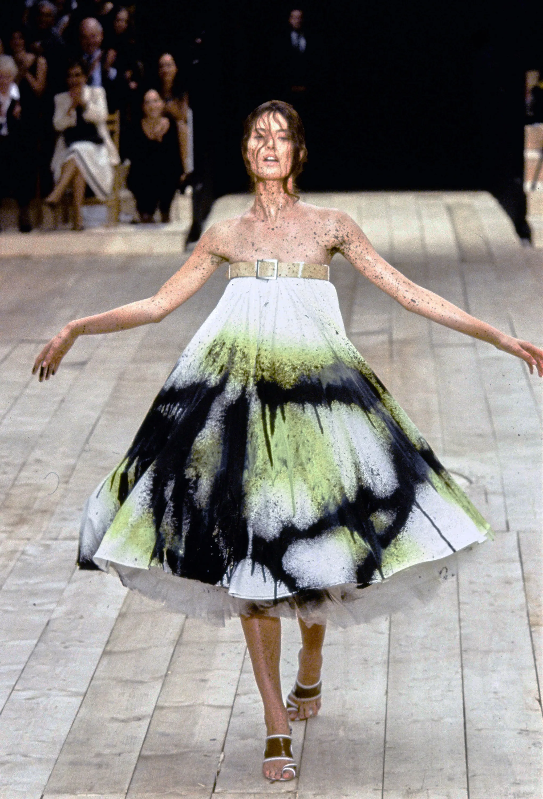

Top Runway Piece
On September 28, 1998, the Spring 1999 show turned an industrial warehouse into a stark, unforgettable stage for fashion, movement, and spectacle.
Sinclair collects runway moments, designer stories, and fashion ideas with a cinematic eye.
Two theatrical fashion moments worth saving to the moodboard.

On September 28, 1998, the Spring 1999 show turned an industrial warehouse into a stark, unforgettable stage for fashion, movement, and spectacle.

John Galliano's Spring 2024 couture collection leaned into fantasy with corsets, ripped stockings, vinyl gloves, and theatrical detail.